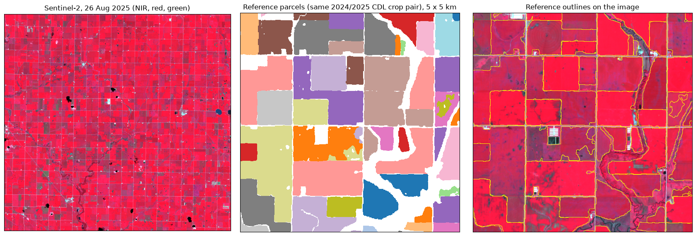
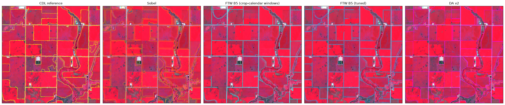
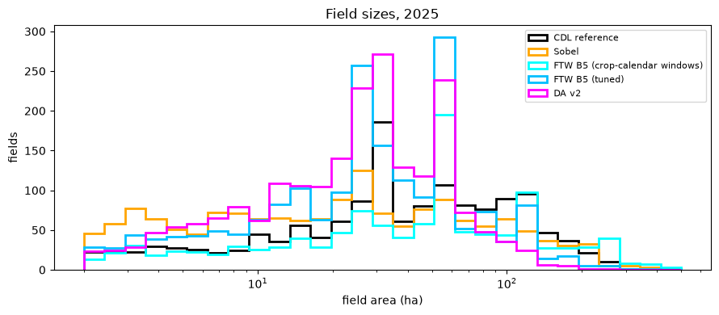

Field Edge Detection in Sentinel-2: Fields of The World versus Delineate Anything
This notebook compares Fields of The World and Delineate Anything on Sentinel-2 imagery of the US Corn Belt, next to classical edge detectors, and scores them against field parcels derived from the Cropland Data Layer.
Overview
Field boundaries are the unit of most agricultural statistics, insurance and advice, yet in many countries no field map exists. Two open model families now promise field boundaries anywhere from free Sentinel-2 imagery:
Fields of The World (FTW) (Kerner et al., 2025; https://fieldsofthe.world) trains U-Nets with EfficientNet encoders on 24 countries. A model reads two Sentinel-2 dates (around planting and harvest, B04-B03-B02-B08 each) and labels every pixel background, field or field boundary; fields are the connected field pixels. The output follows the fiboa standard.
Delineate Anything (Lavreniuk et al., 2025) is a YOLO11 instance-segmentation model trained on FBIS-22M, about 23 million field masks at 0.25-10 m. It reads one RGB image and returns one mask per field.
This notebook runs both on the US Corn Belt (Data/08_remote_sensing/08_10_object_detection/Corn_belt, north-central Iowa, 30 x 29 km) for 2024 and 2025, next to classical edge detectors, with the tools in geolattice.rsense.edge_detectors, and scores them against field parcels derived from the 10 m Cropland Data Layer (CDL):
Step
Content
GeoLattice
1
Sentinel-2 dates of 2024 and 2025, CDL at 10 m
rioxarray
2
A field reference from the CDL (parcel proxies and boundaries)
ed.rasterize_boundaries
3
The FTW two-window input
ed.ftw_stack
4
One evaluation protocol: pixel boundary F1 and object (field) matching
ed.edge_metrics, ic.polygon_iou
5
Classical edge detectors (CPU)
ed.classical_edges, ed.boundary_to_instances
6
FTW models B3, B5, B7 and B5 CC-BY with the crop-calendar windows (GPU)
Build a field reference from the Cropland Data Layer and score every method against it with the same protocol.
Prepare the Fields of The World input from two Sentinel-2 dates and run the released FTW models.
Run Delineate Anything on one RGB date and compare it with FTW and classical edge detectors.
Choose every setting on 2024 and apply it unchanged to 2025.
Read object F1, boundary F1, field size and year-to-year stability, including where models merge or split fields.
Export the best 2025 field map as fiboa GeoParquet and check the licence of each model.
Contents
Rules of the comparison
Setup
Data
A field reference from the CDL
The FTW input: two windows per year
One evaluation protocol for every method
Classical edge detectors (CPU)
Fields of The World with the crop-calendar windows (GPU)
FTW settings chosen on 2024, tested on 2025
Delineate Anything
Results
Year-to-year stability
The best map as fiboa GeoParquet
Discussion
Rules of the comparison
Selection year and test year. Every choice (thresholds of the classical detectors, FTW windows and settings, Delineate Anything model, date and scale) is made on 2024 and applied unchanged to 2025. Scores on 2025 are the test result.
No training. All networks are used as released; nothing is fine-tuned on Iowa.
Hardware. Steps 1-5 run on a CPU. Steps 6-8 use a GPU (one RTX A5500: about 10 s per model and year for this 883 km² AOI); on a CPU expect minutes per run.
Downloads. The FTW checkpoints come from the FTW GitHub release through ed.load_ftw_model(..., download=True) and the Delineate Anything checkpoints from Hugging Face, about 0.8 GB in total, cached in ~/.cache/geolattice/ (set RUN_DOWNLOAD = False to use local files only). Licences: FTW standard models include CC-BY-NC-SA training data, the _CCBY models are CC-BY-4.0, Delineate Anything is AGPL-3.
Setup
Installation. This notebook needs installation option 6 (every GeoLattice module): pip install "geolattice[all]". See “Installation options” in the GeoLattice README.
Code
# Setup: libraries, GeoLattice modules, device, paths and the random seed.import time, warningsfrom pathlib import Pathwarnings.filterwarnings("ignore")import numpy as np, pandas as pd, xarray as xr, rioxarrayimport geopandas as gpdimport matplotlib.pyplot as pltfrom matplotlib.colors import ListedColormapfrom scipy import ndimage as ndifrom skimage.measure import label as cc_labelfrom rasterio import features as rfeatfrom shapely.geometry import shapeimport torchimport geolattice.rsense.edge_detectors as edimport geolattice.rsense.classify.image_classification as icCANDIDATES = [Path("../../../../Data/08_remote_sensing/08_10_object_detection/Corn_belt"), Path("Data/08_remote_sensing/08_09_image_classification/Corn_belt")]DATA =next((p for p in CANDIDATES if p.is_dir()), None)if DATA isNone:raiseFileNotFoundError("Run Jupyter from this notebook's folder or from the GeoLattice repository root.")S2_DIR, CDL_DIR = DATA /"Sentinel_2", DATA /"CDL"/"10_m"OUT = DATA /"outputs"/"field_edge_sentinel2"OUT.mkdir(parents=True, exist_ok=True)DA_CACHE = Path.home() /".cache"/"geolattice"/"delineate_anything"# Delineate Anything checkpointsRUN_DOWNLOAD =True# fetch missing FTW / Delineate Anything checkpoints (about 0.8 GB, once)DEVICE ="cuda"if torch.cuda.is_available() else"cpu"print("torch", torch.__version__, "| device:", DEVICE,"|", torch.cuda.get_device_name(0) if DEVICE =="cuda"else"CPU only: Steps 1-5 run fine, Steps 6-7 are slow")SEED =42rng = np.random.default_rng(SEED)YEARS = (2024, 2025)
The Sentinel-2 folder holds one clear L2A image per month from May to October (the download kept scenes with at least 90 % of the AOI clear). The four FTW bands (red B04, green B03, blue B02, NIR B08) are read at 10 m; the scene classification layer masks clouds and shadows. The digital numbers have the L2A radiometric offset already removed (reflectance = DN / 10 000). The 10 m CDL of 2024 and 2025 (EPSG:5070) is put on the Sentinel-2 grid by nearest neighbour.
Code
# Step 1. The Sentinel-2 dates of 2024 and 2025 and the 10 m CDL on one grid.inv = pd.read_csv(S2_DIR /"inventory.csv")inv = inv[inv.status.eq("downloaded") & inv.year.isin(YEARS)][["year", "month", "date", "tiles", "scene_cloud_pct", "aoi_clear_frac", "folder"]]print(inv.to_string(index=False))BANDS = ["red", "green", "blue", "nir"] # B04, B03, B02, B08: the FTW bandsdef s2_window(folder):"""The four 10 m FTW bands of one date in Sentinel-2 L2A digital numbers (offset already removed), with clouds, shadows and no data (scene classification layer) set to NaN.""" p = S2_DIR / folder ref = rioxarray.open_rasterio(p /"red.tif").squeeze(drop=True) scl = rioxarray.open_rasterio(p /"scl.tif").squeeze(drop=True).rio.reproject_match(ref, resampling=0).values bad = np.isin(scl, [0, 1, 3, 8, 9, 10, 11]) a = xr.concat([rioxarray.open_rasterio(p /f"{b}.tif").squeeze(drop=True).astype("float32") for b in BANDS], "band") a = a.assign_coords(band=BANDS).where(~xr.DataArray(bad, dims=("y", "x")) & (a >0))return a.rio.write_crs(ref.rio.crs)FOLDERS =dict(zip(pd.to_datetime(inv.date).dt.strftime("%Y-%m-%d"), inv.folder))WIN = {d: s2_window(f) for d, f in FOLDERS.items()}GRID = WIN[next(iter(WIN))].isel(band=0, drop=True)H, W = GRID.shapeTRANSFORM, CRS = GRID.rio.transform(), GRID.rio.crsprint(f"\n{len(WIN)} dates on a {W} x {H} px grid at 10 m ({W * H *1e-4:,.0f} km²), {CRS}")# CDL 2024 and 2025 at 10 m (EPSG:5070) onto the Sentinel-2 grid, nearest neighbourCDL = {y: rioxarray.open_rasterio(CDL_DIR /f"CDL_{y}_10m.tif").squeeze(drop=True).rio.reproject_match(GRID, resampling=0).values.astype("int16")for y in YEARS}legend = pd.read_csv(CDL_DIR /"cdl_class_legend.csv").set_index("code")["class_name"]share = pd.DataFrame({y: pd.Series(CDL[y][CDL[y] >0]).map(legend).value_counts(normalize=True).head(8) *100for y in YEARS}).round(1)print("\nCDL classes (% of labelled pixels):");print(share.fillna(0))
All twelve dates are almost cloud-free (95-100 % of the AOI clear). Corn and soybeans cover about 90 % of the labelled land in both years.
A field reference from the CDL
There are no digitised field boundaries for this AOI, so we build parcel proxies from the CDL:
Cropland is any cultivated CDL class in both years; grass/pasture, developed land (including the 1-pixel roads of the CDL), forest, wetland and water are not fields.
Each pixel’s crop is taken from a 5 x 5 majority-filtered CDL, which removes the per-pixel speckle inside fields, while the cropland mask comes from the original CDL so that roads keep separating fields.
A parcel is a 4-connected group of cropland pixels with the same (2024, 2025) crop pair. With the corn-soybean rotation, most neighbouring fields differ in at least one year (only 15 % of cropland has the same crop in both years); roads and farmsteads separate the rest. Parcels below 2 ha (mostly classification noise at field edges) are dropped and holes (ponds, speckle) filled.
The boundary reference is each parcel outline buffered by 5 m (a band about two pixels wide), rasterised with ed.rasterize_boundaries; pixels inside a parcel or on its boundary band are scored.
This reference has known limits: two neighbouring fields with the same crop in both years merge into one parcel, and a field split between two crops (strip trials, a replanted part) becomes two. It measures agreement with the CDL’s view of the fields, not with a cadastre.
Code
# Step 2. A field reference from the CDL: parcel proxies and their boundaries.from shapely.geometry import Polygon# Cropland = cultivated CDL codes (1-60, 66-80, 200-255); grass/pasture, developed, forest, wetland and water are not fields.def cropland(c):return ((c >=1) & (c <=60)) | ((c >=66) & (c <=80)) | (c >=200)# The CDL is a per-pixel classification with speckle inside fields. The crop of each pixel is taken from a 5 x 5# majority-filtered CDL (removes speckle), but the cropland mask from the original CDL, which keeps the 1-pixel# roads and farmsteads that separate fields (a majority filter would erase them).from skimage.filters.rank import majorityfrom skimage.morphology import footprint_rectangleCDLS = {y: majority(np.clip(CDL[y], 0, 255).astype("uint8"), footprint_rectangle((5, 5))).astype("int16") for y in YEARS}CROP = cropland(CDL[2024]) & cropland(CDL[2025]) & cropland(CDLS[2024]) & cropland(CDLS[2025])# A parcel proxy: connected cropland pixels with the same (2024, 2025) crop pair. The corn-soybean rotation makes# most neighbouring fields differ in at least one year; roads and farmsteads (developed) separate the rest.pair = np.where(CROP, CDLS[2024].astype("int32") *1000+ CDLS[2025], -1)lab = cc_label(pair +1, background=0, connectivity=1)MIN_HA =2.0# smaller pieces are mostly CDL noise at field edgessize = np.bincount(lab.ravel())keep = np.flatnonzero(size >= MIN_HA *100); keep = keep[keep >0]PARCELS = np.where(np.isin(lab, keep), lab, 0).astype("int32")REF = gpd.GeoDataFrame({"ref_id": [int(v) for _, v in rfeat.shapes(PARCELS, mask=PARCELS >0, transform=TRANSFORM, connectivity=4)]}, geometry=[shape(g) for g, _ in rfeat.shapes(PARCELS, mask=PARCELS >0, transform=TRANSFORM, connectivity=4)], crs=CRS)REF = REF.dissolve("ref_id").reset_index()REF["geometry"] = REF.geometry.apply(lambda g: Polygon(g.exterior) if g.geom_type =="Polygon"else g) # fill holes (farm ponds, speckle)REF["area_ha"] = REF.area /1e4# boundary reference: parcel outlines buffered by 5 m (a band about two 10 m pixels wide); scored pixels = inside a# parcel or on its boundary bandTRUTH, VALID = ed.rasterize_boundaries(REF, transform=TRANSFORM, shape=(H, W), buffer=5.0, return_valid=True)TRUTH, VALID = TRUTH.astype(bool), VALID.astype(bool)print(f"{len(REF):,} reference parcels (≥ {MIN_HA} ha): median {REF.area_ha.median():.1f} ha, mean {REF.area_ha.mean():.1f} ha, "f"largest {REF.area_ha.max():.0f} ha; {PARCELS.astype(bool).mean():.0%} of the grid")print(f"scored pixels: {VALID.mean():.0%} of the grid; boundary share of the scored pixels {TRUTH[VALID].mean():.1%}")same_pair = (CDLS[2024] == CDLS[2025])[CROP].mean()print(f"cropland pixels with the same crop in both years (merge risk for neighbours): {same_pair:.0%}")def false_colour(a, lo=(0, 0, 0), hi=(4500, 1800, 1500)):# NIR, red, green: crops bright red, bare soil cyan-grey im = np.dstack([a.sel(band=b).values for b in ("nir", "red", "green")])return np.clip((np.nan_to_num(im) - lo) / np.array(hi), 0, 1)EXT = [float(GRID.x.min()) -5, float(GRID.x.max()) +5, float(GRID.y.min()) -5, float(GRID.y.max()) +5]Z = (slice(1200, 1700), slice(1300, 1800)) # a 5 x 5 km zoom used in all figuresZEXT = [EXT[0] + Z[1].start *10, EXT[0] + Z[1].stop *10, EXT[3] - Z[0].stop *10, EXT[3] - Z[0].start *10]fig, ax = plt.subplots(1, 3, figsize=(17, 5.6))ax[0].imshow(false_colour(WIN["2025-08-26"]), extent=EXT); ax[0].set_title("Sentinel-2, 26 Aug 2025 (NIR, red, green)")ax[1].imshow(np.where(PARCELS >0, PARCELS %20, np.nan)[Z], cmap="tab20", extent=ZEXT, interpolation="nearest")ax[1].set_title("Reference parcels (same 2024/2025 CDL crop pair), 5 x 5 km")ax[2].imshow(false_colour(WIN["2025-08-26"])[Z], extent=ZEXT); REF.cx[ZEXT[0]:ZEXT[1], ZEXT[2]:ZEXT[3]].boundary.plot(ax=ax[2], color="yellow", lw=0.6)ax[2].set_xlim(ZEXT[0], ZEXT[1]); ax[2].set_ylim(ZEXT[2], ZEXT[3]); ax[2].set_title("Reference outlines on the image")for a in ax: a.set_xticks([]); a.set_yticks([])plt.tight_layout(); plt.show()
1,412 reference parcels (≥ 2.0 ha): median 34.9 ha, mean 55.0 ha, largest 424 ha; 88% of the grid
scored pixels: 92% of the grid; boundary share of the scored pixels 10.8%
cropland pixels with the same crop in both years (merge risk for neighbours): 15%

The FTW input: two windows per year
FTW models expect 8 bands: B04, B03, B02, B08 of window A (around planting) followed by the same bands of window B (around harvest), in Sentinel-2 L2A digital numbers. The FTW CLI picks the two dates from the USDA crop calendar; for Iowa that means May and October. ed.ftw_stack builds the stack from two (band, y, x) arrays (band names red, green, blue, nir or B04…) and keeps the georeference.
Code
# Step 3. FTW input: two windows per year, B04-B03-B02-B08 each, stacked with ed.ftw_stack.# Window A around planting (May), window B around harvest (October), from the USDA crop calendar for Iowa.PAIRS = {2024: ("2024-05-18", "2024-10-05"), 2025: ("2025-05-08", "2025-10-10")}STACK = {y: ed.ftw_stack(WIN[a], WIN[b]) for y, (a, b) in PAIRS.items()}s = STACK[2025]print("ftw_stack:", tuple(s.shape), list(s.band.values), "| CRS", s.rio.crs, "| NaN (cloud) share", f"{np.isnan(s.values).any(0).mean():.2%}")fig, ax = plt.subplots(1, 4, figsize=(20, 5))for i, (y, d) inenumerate([(y, d) for y in YEARS for d in PAIRS[y]]): ax[i].imshow(false_colour(WIN[d])[Z], extent=ZEXT); ax[i].set_title(f"{'A'if d == PAIRS[y][0] else'B'} window {y}: {d}") ax[i].set_xticks([]); ax[i].set_yticks([])plt.tight_layout(); plt.show()
In May both crops are bare soil or seedlings, so neighbouring corn and soybean fields look alike; in October many fields are harvested at different times. This matters for which boundaries the model can see (Step 7).
One evaluation protocol for every method
Each method produces field polygons. Two complementary scores:
Pixel boundary score. Predicted boundary pixels against the reference boundary band, with ed.edge_metrics (precision, recall and F1 of the boundary class over the scored pixels), exactly and with a tolerance of one pixel (10 m), because a boundary drawn one pixel to the side of a hand-made or CDL-derived line is not an error in practice. For FTW, every pixel that is not field (boundary or background: FTW calls roads background) counts as boundary; for the polygon methods, the polygon outlines; for classical detectors, the thresholded edge map.
Object (field) score. Predicted fields of at least 2 ha (the reference minimum) whose centre lies in the scored area are matched one-to-one with reference parcels, greedily by decreasing intersection over union (IoU, computed with ic.polygon_iou on candidate pairs from a spatial index). A match needs IoU ≥ 0.5:
Two error types are reported separately: over-segmented references (share of reference parcels split into two or more predictions that each lie mostly inside them) and merged predictions (share of predictions overlapping two or more reference parcels with IoU > 0.1). The median, over reference parcels, of the best IoU of any prediction summarises shape agreement.
Code
# Step 4. One evaluation protocol for every method.RESULTS, MAPS = [], {}def boundary_map(fields):"""1-pixel outlines of predicted polygons on the grid (how polygon methods are scored as boundaries)."""ifnotlen(fields):return np.zeros((H, W), bool)return rfeat.rasterize(((g.boundary, 1) for g in fields.geometry), out_shape=(H, W), transform=TRANSFORM, fill=0, all_touched=True, dtype="uint8").astype(bool)def match_objects(pred, ref=REF, iou_min=0.5):"""One-to-one matching of predicted to reference parcels by IoU (candidate pairs from a spatial index, IoU with ic.polygon_iou). Only predictions of at least MIN_HA (the reference minimum) with their centre in the scored area are counted.""" pred = pred[pred.area >= MIN_HA *1e4].reset_index(drop=True)iflen(pred):from rasterio.transform import rowcol pts = pred.geometry.representative_point() r, c = rowcol(TRANSFORM, pts.x.to_numpy(), pts.y.to_numpy()) r, c = np.clip(r, 0, H -1), np.clip(c, 0, W -1) pred = pred[VALID[r, c]].reset_index(drop=True) pairs = gpd.sjoin(pred[["geometry"]].reset_index(names="p"), ref[["geometry"]].reset_index(names="r"), predicate="intersects") iou = np.array([ic.polygon_iou([pred.geometry.iloc[p]], [ref.geometry.iloc[r]])[0, 0] for p, r inzip(pairs.p, pairs.r)]) pairs = pairs.assign(iou=iou).sort_values("iou", ascending=False) used_p, used_r, tp =set(), set(), 0for p, r, v inzip(pairs.p, pairs.r, pairs.iou):if v < iou_min:breakif p notin used_p and r notin used_r: used_p.add(p); used_r.add(r); tp +=1 best_ref = pairs.groupby("r").iou.max().reindex(range(len(ref))).fillna(0)# over-segmentation: a reference parcel split into >= 2 predictions that each lie mostly inside it inside = pairs.assign(frac=[pred.geometry.iloc[p].intersection(ref.geometry.iloc[r]).area / pred.geometry.iloc[p].area for p, r inzip(pairs.p, pairs.r)]) over = (inside[inside.frac >0.5].groupby("r").size() >=2).mean() iflen(inside) else0 under = (pairs[pairs.iou >0.1].groupby("p").size() >=2).mean() iflen(pairs) else0 n_p, n_r =len(pred), len(ref) prec, rec = (tp / n_p if n_p else0), tp / n_rreturn {"fields": n_p, "object precision": prec, "object recall": rec,"object F1": 2* prec * rec / (prec + rec) if prec + rec else0,"median best IoU": float(best_ref.median()), "over-segmented refs": float(over), "merged preds": float(under)}def evaluate(name, year, fields, *, kind, boundary_score=None, seconds=None, **extra):"""Pixel boundary metrics (exact and with 1 px tolerance) and object metrics for one method and year.""" score = boundary_map(fields).astype(float) if boundary_score isNoneelse boundary_score px0 = ed.edge_metrics(score, TRUTH, valid=VALID, threshold=0.5) px1 = ed.edge_metrics(score, TRUTH, valid=VALID, threshold=0.5, tolerance=1) row = {"method": name, "kind": kind, "year": year, "boundary F1": px0["boundary_f1"], "boundary F1 (±1 px)": px1["boundary_f1"],**match_objects(fields), "median area (ha)": float(fields.area.median() /1e4) iflen(fields) else np.nan,"seconds": seconds, **extra} RESULTS[:] = [r for r in RESULTS ifnot (r["method"] == name and r["year"] == year)] # re-running replaces RESULTS.append(row); MAPS[(name, year)] = fieldsreturn rowdef table(rows=None): df = pd.DataFrame(rows or RESULTS) cols = ["kind", "method", "year", "fields", "boundary F1", "boundary F1 (±1 px)", "object precision", "object recall","object F1", "median best IoU", "over-segmented refs", "merged preds", "median area (ha)", "seconds"]return df[[c for c in cols if c in df]].round(3)ref_row = match_objects(REF)print("sanity check, reference against itself:", {k: round(v, 3) for k, v in ref_row.items()})
ed.classical_edges stretches each band of the 8-band stack between its 2nd and 98th percentiles, applies the detector, and combines bands by their maximum (a multispectral gradient). Sobel and Scharr are 3 x 3 gradient filters (Scharr with rotation-optimised weights); Canny adds Gaussian smoothing, non-maximum suppression and hysteresis, returning thin binary edges. The edge threshold is the one that maximises boundary F1 on 2024 (ed.select_threshold), applied unchanged to 2025; fields are the regions enclosed by edges (ed.boundary_to_instances), then polygonised with the same clean-up as FTW (minimum 500 m², holes filled, simplification 15 m).
Code
# Step 5. Classical edge detectors on the two-window stack (CPU).from shapely.geometry import Polygondef labels_to_fields(labels, *, min_area_m2=500, simplify=15):"""Connected field labels -> polygons, with the same clean-up as detect_fields_ftw.""" geoms = [(shape(g), v) for g, v in rfeat.shapes(labels.astype("int32"), mask=labels >0, transform=TRANSFORM, connectivity=4)]ifnot geoms:return gpd.GeoDataFrame(geometry=[], crs=CRS) g = gpd.GeoDataFrame({"field_id": [v for _, v in geoms]}, geometry=[p for p, _ in geoms], crs=CRS).dissolve("field_id").reset_index() g["geometry"] = g.geometry.apply(lambda p: Polygon(p.exterior) if p.geom_type =="Polygon"else p).simplify(simplify, preserve_topology=True)return g[g.area >= min_area_m2].reset_index(drop=True)def hwc(stack):return np.moveaxis(np.nan_to_num(stack.values), 0, -1)CLASSICAL = {"Sobel": dict(method="sobel"), "Scharr": dict(method="scharr"), "Canny": dict(method="canny", sigma=1.5)}for name, kw in CLASSICAL.items(): t0 = time.time() score = {y: ed.classical_edges(hwc(STACK[y]), **kw) for y in YEARS} thr, _ = ed.select_threshold(score[2024], TRUTH, valid=VALID) # threshold chosen on 2024 ...for y in YEARS: # ... and applied to 2025 unchanged labels = ed.boundary_to_instances(score[y], threshold=thr, min_area_pixels=50, dilate_pixels=1) evaluate(name, y, labels_to_fields(labels), kind="1 classical", boundary_score=(score[y] >= thr).astype(float), seconds=round(time.time() - t0, 1), threshold=thr)table()
kind
method
year
fields
boundary F1
boundary F1 (±1 px)
object precision
object recall
object F1
median best IoU
over-segmented refs
merged preds
median area (ha)
seconds
0
1 classical
Sobel
2024
1233
0.637
0.810
0.505
0.441
0.471
0.452
0.219
0.273
10.772
13.0
1
1 classical
Sobel
2025
1385
0.626
0.796
0.458
0.449
0.453
0.464
0.258
0.228
10.095
20.6
2
1 classical
Scharr
2024
1231
0.636
0.809
0.507
0.442
0.472
0.454
0.215
0.277
10.700
12.8
3
1 classical
Scharr
2025
1384
0.625
0.796
0.454
0.445
0.449
0.463
0.257
0.228
9.895
20.3
4
1 classical
Canny
2024
2819
0.350
0.488
0.044
0.089
0.059
0.129
0.608
0.009
1.125
37.7
5
1 classical
Canny
2025
3043
0.360
0.502
0.061
0.132
0.084
0.162
0.641
0.016
1.240
64.7
Reading the classical detectors.
Pixel scores: Sobel and Scharr give the highest exact pixel boundary F1 of all methods (0.63; 0.80 with a 1-pixel tolerance). Roads and the edge between a corn and a soybean field are strong gradients, and the reference boundaries are exactly those crop edges.
Fields: they are poor (object F1 0.45-0.47). Gaps in the edge map let neighbouring fields leak into each other (23 % of predictions span two reference parcels), and texture inside fields splits others (26 % of reference parcels over-segmented). Their median field is 10 ha against 35 ha in the reference.
Canny: its thin, broken edges fragment the fields (object F1 0.08).
Fields of The World with the crop-calendar windows (GPU)
ed.ftw_models() lists the FTW U-Net checkpoints with their licences. ed.load_ftw_model(name, download=True) fetches a checkpoint once into ~/.cache/geolattice/ftw (or takes a local .ckpt path), reads the architecture stored in it (U-Net, EfficientNet backbone, 8 input bands, 3 classes) and rebuilds it with ic.build_segmenter. ed.detect_fields_ftw divides the stack by 3000, up-samples each 256 px tile by resize_factor (default 2, as in the FTW CLI), predicts overlapping tiles blended with a Hann window, and turns the connected field pixels into polygons (minimum 500 m², holes filled, simplified by 15 m). Here: the FTW defaults and the crop-calendar windows of Step 3 (May and October).
Code
# Step 6. Fields of The World models (GPU), loaded with ed.load_ftw_model and run with ed.detect_fields_ftw.# For the pixel score, every pixel that is not field interior (boundary OR background: FTW calls roads background)# counts as boundary, like the edges of the classical detectors.print(ed.ftw_models().loc[["FTW_PRUE_EFNET_B3", "FTW_PRUE_EFNET_B5", "FTW_PRUE_EFNET_B7", "FTW_PRUE_EFNET_B5_CCBY"], ["version", "license"]])FTW_RUN = ["FTW_PRUE_EFNET_B3", "FTW_PRUE_EFNET_B5", "FTW_PRUE_EFNET_B7", "FTW_PRUE_EFNET_B5_CCBY"]FTW_OUT = {}for name in FTW_RUN: model = ed.load_ftw_model(name, device=DEVICE, download=RUN_DOWNLOAD)for y in YEARS: t0 = time.time() res = ed.detect_fields_ftw(STACK[y], model, device=DEVICE, min_area_m2=500, simplify=15, tile_size=256, overlap=64, resize_factor=2, batch_size=8) sec = time.time() - t0 FTW_OUT[(name, y)] = res evaluate(name.replace("FTW_PRUE_EFNET_", "FTW "), y, res.fields, kind="2 FTW", boundary_score=(res.class_probability.argmax(0) !=1).astype(float), seconds=round(sec, 1), parameters=sum(p.numel() for p in model.parameters()))del model; torch.cuda.empty_cache()table([r for r in RESULTS if r["kind"] =="2 FTW"])
version license
model
FTW_PRUE_EFNET_B3 v3 Mixed Open Licenses (incl. CC-BY-NC-SA)
FTW_PRUE_EFNET_B5 v3 Mixed Open Licenses (incl. CC-BY-NC-SA)
FTW_PRUE_EFNET_B7 v3 Mixed Open Licenses (incl. CC-BY-NC-SA)
FTW_PRUE_EFNET_B5_CCBY v3.1 CC-BY-4.0
kind
method
year
fields
boundary F1
boundary F1 (±1 px)
object precision
object recall
object F1
median best IoU
over-segmented refs
merged preds
median area (ha)
seconds
0
2 FTW
FTW B3
2024
1013
0.527
0.686
0.468
0.336
0.391
0.394
0.220
0.410
25.822
7.9
1
2 FTW
FTW B3
2025
973
0.564
0.752
0.486
0.335
0.397
0.388
0.215
0.439
27.190
7.5
2
2 FTW
FTW B5
2024
1092
0.583
0.760
0.491
0.380
0.428
0.436
0.233
0.398
29.780
9.0
3
2 FTW
FTW B5
2025
1079
0.569
0.733
0.480
0.367
0.416
0.439
0.228
0.397
35.355
8.8
4
2 FTW
FTW B7
2024
938
0.551
0.751
0.472
0.314
0.377
0.368
0.203
0.459
36.715
10.5
5
2 FTW
FTW B7
2025
1003
0.558
0.758
0.499
0.354
0.414
0.411
0.211
0.437
31.655
10.9
6
2 FTW
FTW B5_CCBY
2024
985
0.554
0.725
0.485
0.339
0.399
0.393
0.215
0.419
27.922
8.8
7
2 FTW
FTW B5_CCBY
2025
999
0.581
0.770
0.496
0.351
0.411
0.413
0.206
0.433
28.680
8.8
Reading FTW with the crop-calendar windows.
Scores: with May and October windows and the CLI’s up-sampling factor of 2, all four models reach object F1 0.40-0.43, below Sobel.
Merging: the dominant error is merging. 40-44 % of FTW predictions overlap two or more reference parcels, and recall is only 0.34-0.37. FTW draws the road grid cleanly but often leaves two adjacent fields inside a road-bounded block as one polygon (see Step 9b).
Model size: the larger B7 is no better than B5.
Licence: the CC-BY model is as good as the standard one.
FTW settings chosen on 2024, tested on 2025
Three choices are left to the user: the two windows (here May, June or July for A and September or October for B), whether the +1000 radiometric offset of L2A processing baseline 04.00+ is restored (these files have it removed; the Planetary Computer serves digital numbers with it), and the up-sampling factor (1 or 2). We try all 24 combinations with FTW B5 on 2024, keep the best by object F1, and apply it unchanged to all four models in both years.
Code
# Step 7. FTW settings chosen on 2024 (selection year), then applied unchanged to 2025 (test year).# Three choices the CLI leaves to the user: the two windows, whether the L2A +1000 radiometric offset is restored# (these files have it removed; Planetary Computer serves it), and the up-sampling factor.MONTH = {y: {pd.Timestamp(d).month: d for d in WIN if pd.Timestamp(d).year == y} for y in YEARS}m5 = ed.load_ftw_model("FTW_PRUE_EFNET_B5", device=DEVICE, download=RUN_DOWNLOAD)grid = []t0 = time.time()for ma in (5, 6, 7):for mb in (9, 10):for offset in (0, 1000):for rf in (1, 2): st = ed.ftw_stack(WIN[MONTH[2024][ma]], WIN[MONTH[2024][mb]]) + offset r = ed.detect_fields_ftw(st, m5, device=DEVICE, min_area_m2=500, simplify=15, resize_factor=rf) grid.append({"window A": ma, "window B": mb, "offset": offset, "resize": rf, **match_objects(r.fields)})grid = pd.DataFrame(grid)print(f"{len(grid)} settings in {time.time() - t0:.0f} s; best five on 2024 (object F1):")print(grid.sort_values("object F1", ascending=False).head(5).round(3).to_string(index=False))BEST_FTW = grid.loc[grid["object F1"].idxmax(), ["window A", "window B", "offset", "resize"]].to_dict()print("selected:", BEST_FTW)print("\nmean object F1 by factor (2024):")for col in ("window A", "window B", "offset", "resize"):print(" ", col, grid.groupby(col)["object F1"].mean().round(3).to_dict())# all four FTW models with the selected settings, on both years (2024 = selection, 2025 = test)for name in FTW_RUN: model = m5 if name =="FTW_PRUE_EFNET_B5"else ed.load_ftw_model(name, device=DEVICE, download=RUN_DOWNLOAD)for y in YEARS: st = ed.ftw_stack(WIN[MONTH[y][BEST_FTW["window A"]]], WIN[MONTH[y][BEST_FTW["window B"]]]) + BEST_FTW["offset"] t0 = time.time() res = ed.detect_fields_ftw(st, model, device=DEVICE, min_area_m2=500, simplify=15, resize_factor=int(BEST_FTW["resize"])) FTW_OUT[(name +" tuned", y)] = res evaluate(name.replace("FTW_PRUE_EFNET_", "FTW ") +" (tuned)", y, res.fields, kind="3 FTW tuned", boundary_score=(res.class_probability.argmax(0) !=1).astype(float), seconds=round(time.time() - t0, 1))table([r for r in RESULTS if r["kind"] =="3 FTW tuned"])
24 settings in 238 s; best five on 2024 (object F1):
window A window B offset resize fields object precision object recall object F1 median best IoU over-segmented refs merged preds
7 10 0 1 1583 0.543 0.608 0.574 0.624 0.297 0.136
6 9 1000 1 1780 0.511 0.644 0.570 0.671 0.318 0.108
6 9 0 1 1694 0.522 0.626 0.569 0.638 0.308 0.134
7 9 0 1 1565 0.539 0.598 0.567 0.608 0.299 0.150
6 10 1000 1 1789 0.503 0.637 0.562 0.651 0.315 0.112
selected: {'window A': 7, 'window B': 10, 'offset': 0, 'resize': 1}
mean object F1 by factor (2024):
window A {5: 0.453, 6: 0.483, 7: 0.492}
window B {9: 0.471, 10: 0.482}
offset {0: 0.477, 1000: 0.475}
resize {1: 0.537, 2: 0.415}
kind
method
year
fields
boundary F1
boundary F1 (±1 px)
object precision
object recall
object F1
median best IoU
over-segmented refs
merged preds
median area (ha)
seconds
0
3 FTW tuned
FTW B3 (tuned)
2024
1269
0.517
0.667
0.510
0.458
0.483
0.475
0.246
0.239
22.260
7.7
1
3 FTW tuned
FTW B3 (tuned)
2025
1442
0.532
0.690
0.543
0.555
0.549
0.561
0.257
0.191
26.885
7.4
2
3 FTW tuned
FTW B5 (tuned)
2024
1583
0.620
0.805
0.543
0.608
0.574
0.624
0.297
0.136
27.492
8.3
3
3 FTW tuned
FTW B5 (tuned)
2025
1766
0.605
0.799
0.517
0.647
0.575
0.681
0.308
0.114
26.795
9.3
4
3 FTW tuned
FTW B7 (tuned)
2024
1236
0.603
0.796
0.544
0.476
0.508
0.488
0.236
0.278
30.160
7.4
5
3 FTW tuned
FTW B7 (tuned)
2025
1304
0.578
0.780
0.545
0.504
0.524
0.503
0.242
0.266
31.280
7.7
6
3 FTW tuned
FTW B5_CCBY (tuned)
2024
1761
0.603
0.759
0.461
0.574
0.511
0.577
0.317
0.155
4.775
13.6
7
3 FTW tuned
FTW B5_CCBY (tuned)
2025
1860
0.611
0.776
0.485
0.639
0.551
0.644
0.326
0.124
16.670
11.0
Reading the settings search (2024).
Up-sampling factor: this has by far the largest effect. Without up-sampling, object F1 averages 0.54, against 0.42 with the default factor 2. Iowa fields are large (quarter sections are 65 ha, about 800 x 800 m). Up-sampled twice, a field covers a large part of the 512-pixel network input, which is probably more than the network saw in training.
Window A: a later window helps (July 0.49, June 0.48, May 0.45 on average). In May both crops are bare soil, while in July corn and soybean canopies differ.
Window B and the offset: October is slightly better than September. Restoring the +1000 offset makes no difference on average.
The selected setting is July/October, no offset and no up-sampling (object F1 0.574 on 2024).
Applied unchanged to 2025 it gives:
Model
Object F1, 2025
FTW B5
0.575 (the same as on 2024, so the choice did not over-fit the selection year)
B5 CC-BY
0.551
B3
0.549
B7
0.524
Merging falls from about 40 % to 11-27 %, and recall rises to 0.50-0.65. The settings matter far more than the model size.
Delineate Anything
ed.load_delineate_anything(checkpoint) loads an Ultralytics YOLO11 segmentation checkpoint and ed.detect_delineate_anything runs it over overlapping tiles of a true-colour image, merges duplicate masks from tile overlaps (IoU and containment), and returns field polygons. Three models: DA-S (YOLO11n, 18 MB), DA v1 (YOLO11x, 125 MB) and DA v2 (the authors’ improved release). The image is red-green-blue in Sentinel-2 digital numbers divided by 3000 and clipped to [0, 1]. On 2024 we choose the model and the scale (native 10 m or up-sampled x2) on the August image, then the month for the best model, and apply the choice to 2025.
Code
# Step 8. Delineate Anything (YOLO11 instance segmentation, single RGB image), with ed.detect_delineate_anything.from affine import AffineDA_URLS = {"DA-S": "https://hf.co/torchgeo/delineate-anything-s/resolve/69cd440b0c5bd450ced145e68294aa9393ddae05/delineate_anything_s_rgb_yolo11n-b879d643.pt","DA v1": "https://hf.co/torchgeo/delineate-anything/resolve/60bea7b2f81568d16d5c75e4b5b06289e1d7efaf/delineate_anything_rgb_yolo11x-88ede029.pt","DA v2": "https://hf.co/MykolaL/DelineateAnything/resolve/main/DelineateAnythingv2.pt"}def da_checkpoint(name): path = DA_CACHE / DA_URLS[name].rsplit("/", 1)[1]ifnot path.exists():ifnot RUN_DOWNLOAD:raiseFileNotFoundError(f"{path}: download {DA_URLS[name]}")import shutil, urllib.request path.parent.mkdir(parents=True, exist_ok=True)with urllib.request.urlopen(DA_URLS[name]) as r, open(path.with_suffix(".part"), "wb") as o: shutil.copyfileobj(r, o) path.with_suffix(".part").replace(path)return pathDAM = {k: ed.load_delineate_anything(da_checkpoint(k), device=DEVICE) for k in DA_URLS}def rgb01(d, factor=1):"""True-colour image in [0, 1] (Sentinel-2 DN / 3000, clipped), optionally up-sampled by pixel repetition.""" a = np.clip(np.nan_to_num(np.dstack([WIN[d].sel(band=b).values for b in ("red", "green", "blue")])) /3000, 0, 1)return np.repeat(np.repeat(a, factor, 0), factor, 1) if factor >1else adef run_da(model, d, factor=1, conf=0.1): tile =512* factor t0 = time.time() r = ed.detect_delineate_anything(rgb01(d, factor), DAM[model], tile_size=tile, overlap=tile //4, confidence=conf, min_area_pixels=int(500/ (10/ factor) **2), transform=TRANSFORM * Affine.scale(1/ factor), crs=CRS)return r, time.time() - t0# (a) model and scale, on the August image of 2024sel = []for m in DA_URLS:for f in (1, 2): r, sec = run_da(m, MONTH[2024][8], f) sel.append({"model": m, "date": MONTH[2024][8], "factor": f, "seconds": round(sec), **match_objects(r.fields)})# (b) the date, for the best model and scalebest =max(sel, key=lambda r: r["object F1"])for mo in (6, 7, 9, 10): r, sec = run_da(best["model"], MONTH[2024][mo], best["factor"]) sel.append({"model": best["model"], "date": MONTH[2024][mo], "factor": best["factor"], "seconds": round(sec), **match_objects(r.fields)})sel = pd.DataFrame(sel)print("Delineate Anything on 2024 (selection):");print(sel.round(3).to_string(index=False))b = sel.loc[sel["object F1"].idxmax()]BEST_DA = {"model": b["model"], "month": pd.Timestamp(b["date"]).month, "factor": int(b["factor"])}print("selected:", BEST_DA)# all three models with the selected month and scale, on both yearsDA_OUT = {}for m in DA_URLS:for y in YEARS: r, sec = run_da(m, MONTH[y][BEST_DA["month"]], BEST_DA["factor"]) DA_OUT[(m, y)] = r evaluate(m, y, r.fields, kind="4 Delineate Anything", seconds=round(sec, 1))table([r for r in RESULTS if r["kind"] =="4 Delineate Anything"])
Version:DA v2 is clearly the best release (object F1 0.52 on 2024). DA-S reaches 0.44-0.45. DA v1 fails here (0.28-0.31): it finds only a fifth of the fields and merges many of those it finds.
Scale: the native 10 m image is better than up-sampling, and four times faster (DA v2: 0.518 vs 0.490).
Date: the best month is August (0.518), ahead of June (0.487), July (0.473), September (0.470) and October (0.463). One mid-season image, with every field under full canopy, gives the clearest field edges.
2025: DA v2 reaches object F1 0.504, with high recall (0.60), lower precision (0.44) and a median IoU of 0.62, close to the best tuned FTW models (0.64-0.68).
Errors: its errors are the opposite of FTW’s. It splits fields (34 % of reference parcels are over-segmented) but rarely merges them (6.5 %).
Pixel score: its exact boundary F1 is low (0.33) because instance masks are drawn as 1-pixel outlines that stop short of the roads. With a 1-pixel tolerance it rises to 0.65.
Results
All methods on the test year 2025
Code
# Step 9a. All methods on the test year 2025 (FTW settings and Delineate Anything settings were chosen on 2024).res = table()test = res[res.year ==2025].sort_values(["kind", "object F1"], ascending=[True, False]).drop(columns="year").set_index(["kind", "method"])print("Test year 2025:");print(test.to_string())both = res.pivot_table(index="method", columns="year", values="object F1").round(3)print("\nobject F1, selection year 2024 vs test year 2025:");print(both.sort_values(2025, ascending=False).to_string())t = res[res.year ==2025].sort_values("object F1")colors = {"1 classical": "tab:grey", "2 FTW": "tab:cyan", "3 FTW tuned": "tab:blue", "4 Delineate Anything": "tab:orange"}fig, ax = plt.subplots(1, 3, figsize=(18, 5.2), sharey=True)for a, col inzip(ax, ["object F1", "boundary F1 (±1 px)", "median best IoU"]): a.barh(t.method, t[col], color=[colors[k] for k in t.kind]); a.set_title(f"{col}, 2025"); a.set_xlim(0, 1)ax[0].legend(handles=[plt.Rectangle((0, 0), 1, 1, color=c) for c in colors.values()], labels=list(colors), fontsize=8, loc="lower right")plt.tight_layout(); plt.show()
Consistency: the ranking on 2025 matches the selection year (FTW B5 tuned 0.574 → 0.575, DA v2 0.518 → 0.504).
Shape agreement: tuned FTW B5 also has the best median IoU (0.68), meaning the typical reference field is well matched in shape.
Pixel boundaries: Sobel (0.63) and tuned FTW (0.61) lead the exact boundary F1. With a 1-pixel tolerance they tie at 0.80.
Speed: every network needs about 10 s on the GPU for the 883 km² AOI; the classical detectors need about 20 s on the CPU.
Absolute values: all scores stay below 0.6 partly because of the reference itself (Step 2), not only because of the methods.
What the differences look like
Code
# Step 9b. What the differences look like: the same 5 x 5 km window, 2025.BEST_FTW_NAME =max([r for r in RESULTS if r["kind"] =="3 FTW tuned"and r["year"] ==2025], key=lambda r: r["object F1"])["method"]BEST_DA_NAME =max([r for r in RESULTS if r["kind"] =="4 Delineate Anything"and r["year"] ==2025], key=lambda r: r["object F1"])["method"]show = [("CDL reference", REF, "yellow"), ("Sobel", MAPS[("Sobel", 2025)], "orange"), ("FTW B5 (crop-calendar windows)", MAPS[("FTW B5", 2025)], "cyan"), (BEST_FTW_NAME, MAPS[(BEST_FTW_NAME, 2025)], "deepskyblue"), (BEST_DA_NAME, MAPS[(BEST_DA_NAME, 2025)], "magenta")]img = false_colour(WIN[MONTH[2025][8]])[Z]fig, ax = plt.subplots(1, 5, figsize=(26, 5.6))for a, (t, g, c) inzip(ax, show): a.imshow(img, extent=ZEXT) g.cx[ZEXT[0]:ZEXT[1], ZEXT[2]:ZEXT[3]].boundary.plot(ax=a, color=c, lw=0.7) a.set_xlim(ZEXT[0], ZEXT[1]); a.set_ylim(ZEXT[2], ZEXT[3]); a.set_title(t); a.set_xticks([]); a.set_yticks([])plt.tight_layout(); plt.show()# field-size distributions (polygons of at least 2 ha in the scored area)fig, ax = plt.subplots(figsize=(9, 4))bins = np.logspace(np.log10(2), np.log10(500), 30)for t, g, c in show: ax.hist(g[g.area >= MIN_HA *1e4].area /1e4, bins=bins, histtype="step", lw=2, color=c if c !="yellow"else"k", label=t)ax.set_xscale("log"); ax.set_xlabel("field area (ha)"); ax.set_ylabel("fields"); ax.legend(fontsize=8); ax.set_title("Field sizes, 2025")plt.tight_layout(); plt.show()


Reading the maps.
FTW with the crop-calendar windows draws the road grid cleanly but leaves most road-bounded blocks whole, even where two crops meet.
Tuned FTW adds the internal boundaries between fields.
DA v2 outlines fields tightly and finds the internal boundaries too. It leaves narrow gaps along roads and splits some fields along within-field patterns.
Sobel follows every spectral edge, including waterways and patterns inside fields.
Field sizes. Tuned FTW and DA v2 show clear peaks at about 16, 32 and 65 ha. These are 40, 80 and 160 acres: the quarter-quarter, half-quarter and quarter sections of the US Public Land Survey grid on which Iowa fields are laid out. The reference shares the 32 and 65 ha peaks but has more large parcels, because neighbouring fields with the same crops merge in it. Sobel produces many small fragments, and FTW with the defaults many very large polygons.
Year-to-year stability
Field boundaries change little from one year to the next, even when the crop changes. Matching each method’s 2024 polygons against its own 2025 polygons (the same object matching as Step 4) shows how stable a delineation is, without any reference.
Code
# Step 10. Are the fields stable between 2024 and 2025? Fields rarely change from one year to the next, so a good# delineation should find nearly the same polygons in both years, whatever crop is grown.rows = {}for name in ["Sobel", "FTW B5", BEST_FTW_NAME, BEST_DA_NAME]: a, b = MAPS[(name, 2024)], MAPS[(name, 2025)] b = b[b.area >= MIN_HA *1e4].reset_index(drop=True) o = match_objects(a, ref=b) rows[name] = {"fields 2024": len(a[a.area >= MIN_HA *1e4]), "fields 2025": len(b),"2024 vs 2025 object F1": o["object F1"], "median best IoU": o["median best IoU"]}pd.DataFrame(rows).T.round(3)
fields 2024
fields 2025
2024 vs 2025 object F1
median best IoU
Sobel
1433.0
1586.0
0.412
0.351
FTW B5
1179.0
1146.0
0.792
0.952
FTW B5 (tuned)
1715.0
1924.0
0.662
0.724
DA v2
2174.0
2080.0
0.676
0.774
Reading the stability.
FTW with the defaults is the most stable between years (object F1 0.79, median IoU 0.95), because it mostly draws the permanent road grid.
Tuned FTW (0.66) and DA v2 (0.68) split fields differently in each year. The boundaries inside a block depend on which crops were grown and on the images.
Sobel is the least stable (0.41).
Stability is not accuracy: a map of road-bounded blocks is perfectly stable and still merges fields. For a field register, the stable road grid and the year-specific internal boundaries could be combined.
The best map as fiboa GeoParquet
ed.to_fiboa adds the fiboa core properties: a unique id within the collection, metrics:area and metrics:perimeter computed from the geometry, determination:method = "auto-imagery" and determination:datetime, the date of the last image used (not the processing date). The file can be opened in QGIS or validated with the fiboa tools.
Code
# Step 11. The best method's 2025 fields as fiboa GeoParquet, with ed.to_fiboa.best_row =max([r for r in RESULTS if r["year"] ==2025], key=lambda r: r["object F1"])name = best_row["method"]fields = MAPS[(name, 2025)]if name in (BEST_FTW_NAME,): last_image = MONTH[2025][BEST_FTW["window B"]] details =f"{name}; Sentinel-2 L2A {MONTH[2025][BEST_FTW['window A']]} and {last_image}; ed.detect_fields_ftw"else: last_image = MONTH[2025][BEST_DA["month"]] details =f"{name}; Sentinel-2 L2A {last_image}; ed.detect_delineate_anything"fb = ed.to_fiboa(fields, collection="cornbelt_fields_2025", determination_datetime=last_image, determination_details=details)path = OUT /"cornbelt_fields_2025_fiboa.parquet"fb.to_parquet(path)print(f"best method on 2025: {name} (object F1 {best_row['object F1']:.3f}); {len(fb):,} fields written to {path.name}")print(f"total field area {fb['metrics:area'].sum() /1e4:,.0f} ha (reference parcels: {REF.area.sum() /1e4:,.0f} ha); "f"median {fb['metrics:area'].median() /1e4:.1f} ha")fb.drop(columns="geometry").head()
best method on 2025: FTW B5 (tuned) (object F1 0.575); 2,191 fields written to cornbelt_fields_2025_fiboa.parquet
total field area 76,014 ha (reference parcels: 77,672 ha); median 26.8 ha
id
collection
field_id
score
area_m2
perimeter_m
metrics:area
metrics:perimeter
determination:method
determination:datetime
determination:details
category
0
1
cornbelt_fields_2025
3
0.996584
25050.0
2069.957047
25050.0
2069.957047
auto-imagery
2025-10-10 00:00:00+00:00
FTW B5 (tuned); Sentinel-2 L2A 2025-07-14 and ...
[other]
1
2
cornbelt_fields_2025
4
0.999986
15400.0
851.231056
15400.0
851.231056
auto-imagery
2025-10-10 00:00:00+00:00
FTW B5 (tuned); Sentinel-2 L2A 2025-07-14 and ...
[other]
2
3
cornbelt_fields_2025
5
0.996724
40200.0
1735.404225
40200.0
1735.404225
auto-imagery
2025-10-10 00:00:00+00:00
FTW B5 (tuned); Sentinel-2 L2A 2025-07-14 and ...
[other]
3
4
cornbelt_fields_2025
6
0.999605
22600.0
852.327001
22600.0
852.327001
auto-imagery
2025-10-10 00:00:00+00:00
FTW B5 (tuned); Sentinel-2 L2A 2025-07-14 and ...
[other]
4
5
cornbelt_fields_2025
7
0.992344
23300.0
802.593361
23300.0
802.593361
auto-imagery
2025-10-10 00:00:00+00:00
FTW B5 (tuned); Sentinel-2 L2A 2025-07-14 and ...
[other]
The best method on the test year, FTW B5 with the 2024-selected settings, gives 2 191 fields of at least 500 m² over the whole AOI. Their total area is 76 014 ha, against 77 672 ha of reference parcels, with a median field of 26.8 ha.
determination:datetime is 10 October 2025 (window B), and determination:details names the model and the two image dates. The file is outputs/field_edge_sentinel2/cornbelt_fields_2025_fiboa.parquet.
Discussion
Settings matter more than model size. The windows and the up-sampling factor moved FTW B5 from object F1 0.42 to 0.58. The four FTW models differ by at most 0.05 under the same settings, and B7 is not better than B5 here. The crop-calendar windows of the FTW CLI (May and October) are not ideal in the Corn Belt: in May both crops are bare soil, and July shows the crop contrast.
The licence-clean model costs little. FTW B5 CC-BY reaches 0.551 against 0.575 for the standard B5.
FTW and Delineate Anything make opposite errors. FTW, a semantic model on two dates, merges neighbouring fields when it sees no boundary between them. Delineate Anything, an instance model on one date, splits fields along patterns inside them. DA v2 with a single August image comes within 0.07 of tuned FTW and clearly beats FTW at its defaults; DA v1 is not usable on this imagery.
Classical gradients are a strong pixel baseline but a poor field map. Sobel matches the networks on boundary pixels, because the reference boundaries are crop edges, but its fields leak and fragment.
The reference limits the absolute scores. CDL parcels merge neighbours with the same crops and inherit CDL edge errors. The best method’s median IoU of 0.68 shows that most fields are matched well in shape, even though fewer than 60 % reach the IoU ≥ 0.5 one-to-one match.
Next steps.
Combine the two families, e.g. the FTW field mask with Delineate Anything instances, or the stable road grid with year-specific internal boundaries.
Fine-tune on a sample of digitised local parcels.
Evaluate against surveyed or digitised field boundaries.
Limitations
The reference is derived from the CDL, a 10 m per-pixel crop classification. Neighbouring fields with the same crop in both years merge into one parcel, crop strips inside a field split it, and field edges are only as precise as the CDL. Scores measure agreement with this reference, not with surveyed boundaries.
One landscape. Large, rectangular corn and soybean fields separated by roads are among the easiest cases for field delineation; smallholder landscapes (see 09_10_03) are much harder.
Released models, no fine-tuning. Both FTW and Delineate Anything could be fine-tuned on local parcels; that would change the ranking.
Settings matter. FTW’s windows and Delineate Anything’s date and scale were chosen on one other year; other years or regions may need other choices.
Licences. FTW standard models and their output carry non-commercial training data (use the _CCBY models for commercial work); Delineate Anything is AGPL-3.
Summary
Pipeline.geolattice.rsense.edge_detectors runs the released FTW checkpoints (ftw_models, load_ftw_model, ftw_stack, detect_fields_ftw) and Delineate Anything (load_delineate_anything, detect_delineate_anything) on Sentinel-2. It scores them with edge_metrics and object matching, and writes fiboa with to_fiboa.
Results on the test year 2025, against CDL-derived parcels: FTW B5 with settings chosen on 2024 is best (object F1 0.575). FTW B5 CC-BY (0.551) and DA v2 (0.504) follow, then Sobel (0.453). FTW with the crop-calendar defaults reaches only 0.40-0.42.
What to tune for FTW: the up-sampling factor (1 for large fields) and the windows (a mid-season window A) matter more than the model size.
Speed: both run in about 10 s per 883 km² on one GPU.
References
Kerner, H., Chaudhari, S., Ghosh, A., Robinson, C., Ahmad, A., Choi, E., et al. (2025). Fields of The World: a machine learning benchmark dataset for global agricultural field boundary segmentation. Proceedings of the AAAI Conference on Artificial Intelligence. Code: https://github.com/fieldsoftheworld/ftw-baselines.
Lavreniuk, M., Kussul, N., Shelestov, A., Yailymov, B., Salii, Y., Kuzin, V., & Szantoi, Z. (2025). Delineate Anything: resolution-agnostic field boundary delineation on satellite imagery. arXiv:2504.02534.
fiboa: Field Boundaries for Agriculture, specification v0.3. https://fiboa.org.
Boryan, C., Yang, Z., Mueller, R., & Craig, M. (2011). Monitoring US agriculture: the USDA NASS Cropland Data Layer program. Geocarto International, 26(5), 341-358.
Canny, J. (1986). A computational approach to edge detection. IEEE TPAMI, 8(6), 679-698.